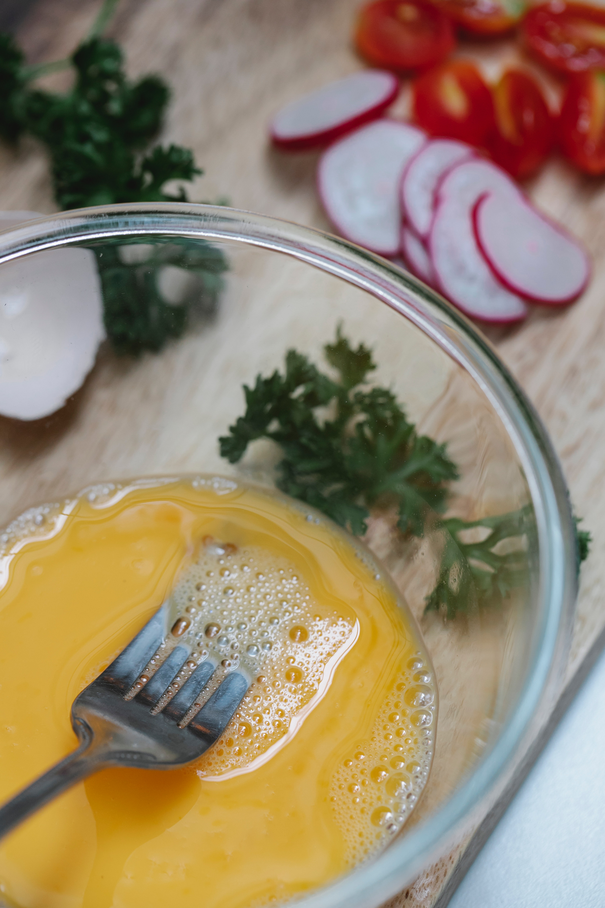
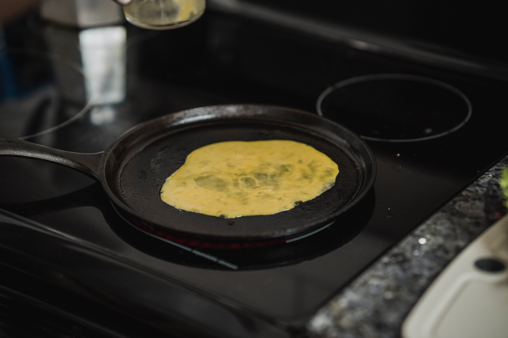
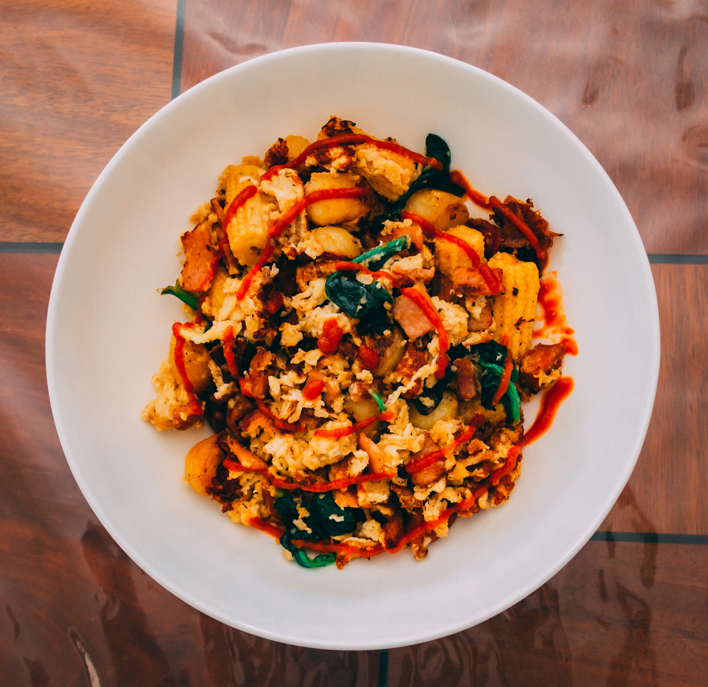
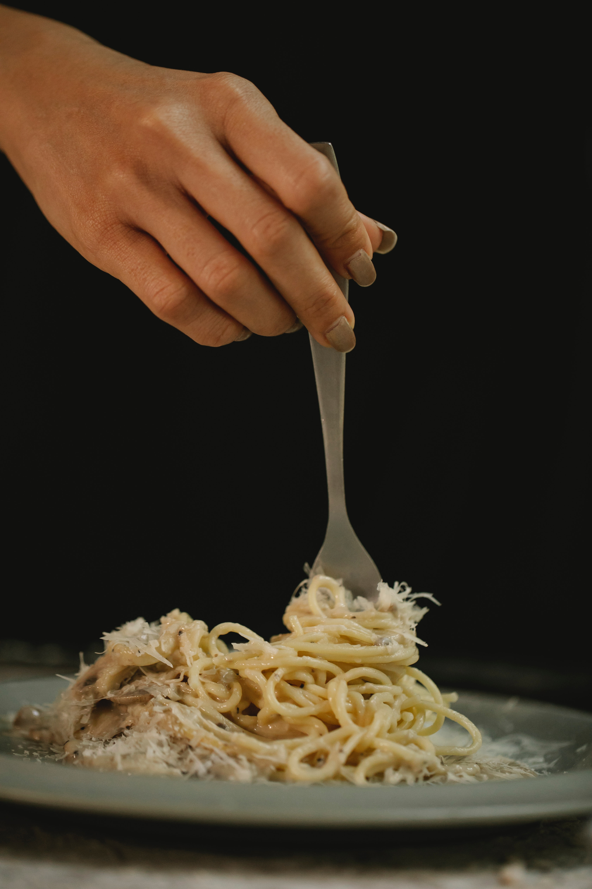

Huevos


Huevos revueltos.
Ingredientes:
- 2 huevos
- 1 cucharada colmada de aceite de oliva virgen extra o de mantequilla
- Sal y pimienta (al gusto de cada casa)
- Opcional: Cebolla picada o un poquito de perejil fresco
Preparación de los huevos revueltos
- En una sartén en la que no se peguen los ingredientes (lo mejor es esa que tenéis para la tortilla, para unos crepes o para la tortilla francesa) vamos a preparar unos huevos revueltos simples y rápidos de hacer.
- En el tema de los huevos, dos opciones. Se pueden hacer directamente, pero si separamos la clara de la yema, le daremos el punto perfecto ya que la yema no hay que cocinarla demasiado para que salga con una textura aireada y húmeda. Pero en mi caso, lo solemos hacer juntos, tal como decía sin batir mucho, sólo batir hasta mezclar pero sin llegar a espumar el huevo.
- Es importante que la sartén esté a fuego medio para que se cocine a la perfección. A fuego muy bajo van a tardar mucho en cuajar y a fuego fuerte corren riesgo de quedarse secos.
- Echamos los huevos a la sartén caliente y removemos constantemente y de forma envolvente con una cuchara de madera. Debemos separar constantemente lo que se pega a las paredes y al fondo de la sartén. Cuando los huevos estén todavía húmedos, pero no totalmente líquidos, los juntamos en el centro.
- Vamos a atravesar los huevos desde los bordes hacia el centro, dejando unos segundos entre pasada y pasada para darle tiempo a que vayan cuajando.
- Apagamos el fuego y veremos el huevo que se sigue cocinado porque la sartén está aún caliente, retiramos a un plato. Salpimentamos y añadimos un poquito de cebollino finamente picado (de manera opcional).
- Cuanto mejor sea la materia prima mejor será el resultado final. Si partimos de unos huevos, aceite de calidad y nuestros consejos, os aseguro que os saldrán de rechupete. Aquí tenéis la base para hacerlos bien, luego ya cada uno le dará su toque especial completando el plato con otros ingredientes y condimentos a su gusto.
- Se pueden hacer con mantequilla o con manteca, aporta más sabor a tus huevos revueltos pero son menos sanos. En casa nos hemos acostumbrado a hacerlos con aceite de oliva virgen extra, quedan y saben de rechupete. Y por supuesto son más saludables.
- El secreto para preparar unos ricos y deliciosos huevos revueltos a la perfección está en la forma en que se mezclan y revuelven, lo único que necesita es fuego lento y un poquito de paciencia para lograr un buen resultado. Si tenéis prisa y los hacéis a fuego demasiado fuerte o durante demasiado tiempo, os quedarán secos y aburridos.
- Y por último, se deben sazonar una vez que estén hechos, como con los huevos fritos.
Consejos para unos huevos revueltos de rechupete
Arroz


Arroz campero o a la campesina. Receta de arroz fácil y delicioso.
Ingredientes:
- 300 g. de arroz Brillante Sabroz
- 1 l. de caldo de verduras
- 150 g. zanahoria
- 120 g. tomate triturado
- 120 g. jamón serrano en daditos
- 120 g. guisantes, 2 dientes de ajo
- Aceite de oliva virgen extra
- Sal y pimienta negra (al gusto de cada casa)
Preparación de las verduras para el arroz
- Comenzamos preparando las verduras. Lavamos el pimiento y la zanahoria y los cortamos en daditos. Si vamos a emplear guisantes congelados, los retiramos del congelador. Pelamos y cortamos en ajo en dados.
- En una cazuela ancha calentamos un chorrito de aceite de oliva. Cuando el aceite comience a calentarse incorporamos los ajos. Cocinamos los ajos hasta que vemos que comienzan a dorarse. En este momento añadimos el pimiento rojo y la zanahoria cortados en dados. Cocinamos la verdura durante 6-7 minutos removiendo de vez en cuando.
- En este punto agregamos el jamón serrano cortado en daditos y el azafrán. Removemos bien y dejamos que se sofrían junto a las verduras durante 3-4 minutos. Añadimos los guisantes y el tomate triturado y seguimos cocinando las verduras durante 10 minutos más. Es importante remover de vez en cuando para evitar que se queme. Debemos mantener el sofrito a temperatura no demasiado alta.
- Incorporamos el arroz y lo rehogamos, juntos con el resto de ingredientes, durante 2-3 minutos. Debemos remover el arroz para que se impregne de toda la esencia del sofrito, su sabor y el aceite. Con el rehogado además ayudamos a que los granos se mantengan sueltos más fácilmente.
- Durante todo este proceso habremos estado manteniendo el caldo caliente para poder emplearlo en el momento preciso. Cuando hayamos rehogado el arroz, será el momento de cubrirlo con el caldo caliente.
- Cubrimos con el caldo, habremos mantenido caliente. Comprobamos el punto de sal y si hiciese falta rectificamos. Si os gusta la pimienta negra, sería el momento de darle un toque de la misma.
- Cocinamos el arroz durante 18-20 minutos desde el momento en que comienza a hervir el caldo. Dejamos reposar el arroz 5 minutos y servimos inmediatamente para que no se pase.
- Si queréis una versión vegetariana, sólo tenéis que quitar de los ingredientes el jamón. Tendréis un arroz con verduras delicioso y muy sabroso, os lo aseguro.
Cocción del arroz y presentación final
Espaguetis


Espaguetis con queso y pimienta negra.
Ingredientes:
- 400 g. spaghetti Garofalo
- 100 ml. de agua
- 150 g. de queso Parmesano
- 10 g. de pimienta negra
- Sal (al gusto de cada casa)
Preparación de la salsa con queso y pimienta
- Rallamos el queso Parmesano y calentamos 100 ml. de agua en el micro. No debería estar muy caliente, no más de 60º C. podemos comprobarlo con un termómetro. Mezclamos el queso rallado con el agua templada hasta que consigamos una crema de textura suave. Reservamos.
- Molemos o machacamos en un mortero la pimienta negra. Incorporamos la pimienta a una sartén y la tostamos ligeramente durante unos segundos. Así conseguiremos una aroma más fragante. Reservamos.
- Calentamos en una cazuela un litro de agua por cada 100 g de pasta. Esta proporción ayuda a que la pasta no se pegue. Del mismo modo, no será necesario añadir aceite de oliva al agua de cocción para que la pasta no se pegue.
- Cuando el agua comience a hervir, echamos 1 puñado generoso de sal, unas 2 cucharadas rasas por cada 500 gramos de pasta. En ese momento añadimos los spaghetti, de una sola vez, todos juntos, removemos por un momento con una cuchara de madera.
- Cocemos los spaghetti durante 10 minutos para conseguir una pasta “al dente” o en su punto justo. Una vez que la pasta está cocida, la escurrimos inmediatamente reservando parte de su agua.
- En un bol mezclamos los spaguetti recién cocidos con la crema de queso parmesano. Si fuera necesario añadimos algo del agua de cocción que tenemos reservada. Incorporamos la pimienta molida y tostada, la integramos y servimos al momento.